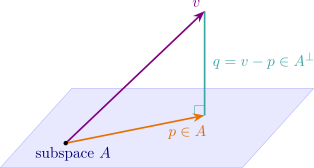

7.2 Orthogonal Vectors
- i.
- Two vectors \(x,y\in V\) are orthogonal if the \((x,y)=0\) and we write \(x\perp y\).
- ii.
- A set of vectors is orthogonal if the vectors are pairwise orthogonal. i.e. if \[(x_n,x_m)= \begin {cases} c &\text {if}\hspace {0.3cm} n=m\\ 0 &\text {if}\hspace {0.3cm} n\neq m \end {cases} \]
- iii.
- The set in (ii) is orthonormal if \(c=1\).
Example 7.2.2. In \(\mathbb {R}^6\) with standard inner product, find the vectors orthogonal to vector \(x=(3, -2,-3,1,1,-1)\).
Solution. Let \(y=(y_1,y_2,y_3,y_4,y_5,y_6)\in \mathbb {R}^6\). Then \(x\perp y\) if \((x,y)=0\), i.e. \(0=(x,y)=3y_1-2y_2-3y_3+y_4+y_5-y_6\qquad (*)\) we seek the solutions to \((*)\). Now \(\mathbb {R}-\)basis for the solution space is
\((y_1,y_2,y_3,y_4,y_5,y_6)=\{(1,0,0,0,0,3)y_1+(0,1,0,0,0,-2)y_2+(0,0,1,0,0,-3)y_3+(0,0,0,1,0,1)y_4\\+(0,0,0,0,1,1)y_5\}\)
\(\implies 3y_1-2y_2-3y_3+y_4+y_5-y_6=0\)
\(\implies y_6=3y_1-2y_2-3y_3+y_4+y_5\)
\(\implies (y_1,y_2,y_3,y_4,y_5,y_6)=(y_1,y_2,y_3,y_4,y_5,3y_1-2y_2-3y_3+y_4+y_5)\)
Thus \(R-\)basis for solution space to \((*)\) is
\(\{(1,0,0,0,0,3),(0,1,0,0,0,-2),(0,0,1,0,0,-3),(0,0,0,1,0,1),(0,0,0,0,1,1)\}\).
Thus all real linear combinations to these vectors are orthogonal to \(x\).
Lemma 7.2.3. An orthogonal set of non-zero vectors in an inner product space \(V\) is linearly
independent.
Proof. Let \(\{x_1,x_2,\dots ,x_n\}\) be orthogonal and non-zero in \(V\), \((\alpha _1,\alpha _2,\dots ,\alpha _n)\in \mathbb {R}\) and
let \(\alpha _1x_1+\alpha _2x_2+\cdots +\alpha _nx_n=0\). For \(k\in [1,n]\), \begin {align*} 0 &=\Bigg (\sum ^n_{i=1}\alpha _ix_i,x_k\Bigg )\\\\ &=\sum ^n_{i=1}\alpha _i(x_i,x_k)\\\\ &=\alpha _k(x_k,x_k)\\ &=C\alpha _k\implies \alpha _k=0.\\ \end {align*}
□
Theorem 7.2.4 (Gram-Schmidt orthogonalization procedure). Every finite dimensional inner
product space has a basis consisting of orthonormal vectors.
Proof. Let \(\{x_1,x_2,\dots ,x_n\}\) be a basis over \(\mathbb {F}\) for \(V\). Define the subset \(\{e_1,e_2,\dots ,e_n\}\) of \(V\) inducting as follows: \begin {align*} e_1 &=x_1\\ e_2 &=x_2-\frac {(x_2,e_1)}{||e_1||^2}e_1\\ e_3 &=x_3-\frac {(x_3,e_2)}{||e_2||^2}e_2-\frac {(x_3,e_1)}{||e_1||^2}e_1\\ \vdots \\ e_n &=x_n-\frac {(x_n,e_{n-1})}{||e_{n-1}||^2}e_{n-1}-\cdots -\frac {(x_n,e_1)}{||e_1||^2}e_1\\ \end {align*}
Since \(\{x_1,x_2,\dots ,x_n\}\) is linearly independent \(\implies e_1, e_2,\dots ,e_n\neq 0\) so division by \(e's\) makes sense.
Now if \(n=2\) then \begin {align*} (e_2,e_1) &=(x_2,e_1)-\frac {(x_2,e_1)}{||e_1||^2}(e_1,e_1)\\ &=(x_2,e_1)-(x_2,e_1)=0\\\\ \implies &e_2\perp e_1.\\ \end {align*}
For \(n>2\) assume that \(\{e_1,e_2,\dots ,e_{n-1}\}\) is orthogonal. Then for \(i=1,2,3,\dots ,n-1\) \begin {align*} (e_n,e_i) &=(x_n,e_i)-\frac {(x_n,e_{n-1})}{||e_{n-1}||^2}(e_{n-1},e_i)----\frac {(x_n,e_i)}{||e_i||^2}\\ &=(x_n,e_i)-\frac {(x_n,e_i)}{||e_i||^2}(e_i,e_i)\\ &=(x_n,e_i)-(x_n,e_i)=0 \end {align*}
\(\implies e_n\perp e_i\) for \(i=1,2,3,\dots ,n-1\) and so \(\{e_1,e_2,\dots ,e_n\}\) is an orthogonal set of non-zero vectors in \(V\) it follows by Lemma 7.2.3 that \(\{e_1,e_2,\dots ,e_n\}\) is linearly
independent over \(\mathbb {F}\implies \{e_1,e_2,\dots ,e_n\}\) is an \(\mathbb {F}\) basis for \(y\).
Now put \(P_i=\dfrac {1}{||e_i||}\,e_i\) for \(i=1,2,3,\dots ,n\) then \(\{P_1,P_2,\dots ,P_n\}\) is an orthonormal set and so an orthonormal basis for \(V\).
□
Example 7.2.5. Apply Gram-Schmidt procedure to the basis \(\{(1,0,1),(1,0,-1),(0,3,4)\}\) to produce an orthonormal basis
for \(\mathbb {R}^3\).
Solution. By procedure \begin {align*} e_1 &=(1,0,1)\\\\ e_2 &=(1,0,-1)-\frac {((1,0,-1)(1,0,1))}{||(1,0,1)||^2}(1,0,1)\\ &=(1,0,-1)-(0,0,0)\\ &=(1,0,-1)\\\\ e_3 &=(0,3,4)-\frac {((0,3,4)(1,0,-1))}{||(1,0,-1)||^2}(1,0,-1)-\frac {((0,3,4)(1,0,1))}{||(1,0,1)||^2}(1,0,1)\\ &=(0,3,4)+(2,0,-2)-(2,0,2)\\ &=(0,3,0) \end {align*}
\(\implies \{e_1,e_2,e_3\}\) is orthogonal set.
\(\implies \Bigg \{\dfrac {e_1}{||e_1||},\dfrac {e_2}{||e_2||},\dfrac {e_3}{||e_3||}\Bigg \}\) is an orthonormal set.
Definition 7.2.6. Let \(A\subset V\). The orthogonal compliment of \(A\) is the set of vectors in \(V\) that are orthogonal to every vector in \(A\). \[\text {i.e.}\hspace {0.3cm} A^{\perp }=\{x\in V|x\perp y\hspace {0.3cm} \forall y\in A\}=\{x\in V|(x,y)=0\hspace {0.3cm}\text {for all}\hspace {0.3cm} y\in A\}\]
Proof. Let \(V\) be an inner product space, \(A\subset V\), and recall \(A^{\perp }=\{x\in V:(x,a)=0 \text { for every } a\in A\}\). Let \(x,y\in A^{\perp }\), \(\alpha \in \mathbb {F}\), and let \(a\in A\) be arbitrary.
- i.
- \((0,a)=0\) for every \(a\in A\), so \(0\in A^{\perp }\) and the set is not empty.
- ii.
- \((x+y,a)=(x,a)+(y,a)=0+0=0\) for every \(a\in A\), so \(x+y\in A^{\perp }\).
- iii.
- \((\alpha x,a)=\alpha (x,a)=\alpha \cdot 0=0\) for every \(a\in A\), so \(\alpha x\in A^{\perp }\).
Hence \(A^{\perp }\) is a subspace of \(V\). Note that the condition must be checked against every \(a\in A\), not against a single vector. □
Proof. Two things must be shown: that \(A\) and \(A^{\perp }\) intersect only in \(0\), and that together they give all of \(V\).
\(A\cap A^{\perp }=\{0\}\)
Let \(x\in A\cap A^{\perp }\). Being in \(A^{\perp }\), \(x\) is orthogonal to every element of \(A\); being in \(A\), it is therefore orthogonal to itself, so \((x,x)=0\). By the definition of an inner product this forces \(x=0\).
\(A+A^{\perp }=V\)
By Theorem 7.2.4, \(A\) has an orthonormal basis \(\{e_1,\dots ,e_k\}\). Given \(v\in V\), define \[p=\sum _{i=1}^{k}(v,e_i)\,e_i\in A,\qquad q=v-p.\] For each \(j\), using \((e_i,e_j)=0\) for \(i\neq j\) and \((e_j,e_j)=1\), \[(q,e_j)=(v,e_j)-\sum _{i=1}^{k}(v,e_i)(e_i,e_j)=(v,e_j)-(v,e_j)=0.\] So \(q\) is orthogonal to every \(e_j\), and hence — since the \(e_j\) span \(A\) and the inner product is linear in its first argument — to every element of \(A\). Thus \(q\in A^{\perp }\) and \(v=p+q\) with \(p\in A\), \(q\in A^{\perp }\).
Since every \(v\) decomposes and the two subspaces meet only in \(0\), the sum is direct: \(V=A\oplus A^{\perp }\). □
Remark. The vector \(p\) is the orthogonal projection of \(v\) onto \(A\), and the decomposition is unique: if \(v=p'+q'\) were another, then \(p-p'=q'-q\) would lie in \(A\cap A^{\perp }=\{0\}\).

Theorem 7.2.9. If \(A\in M_{m,n}(\mathbb {F})\), then the row rank of \(A\) is equal to the column rank of \(A\).
Proof. Let \(r\) be the row rank of \(A\), and let \(u_1,\dots ,u_r\) be a basis for the row space, written as row vectors of length \(n\). Every row of \(A\) is a combination of them, say \[A_{i\bullet }=\sum _{k=1}^{r}c_{ik}u_k\qquad (i=1,\dots ,m).\] Reading this entry by entry, the \((i,j)\) entry of \(A\) is \[a_{ij}=\sum _{k=1}^{r}c_{ik}(u_k)_j.\] Now fix \(j\) and read the same identity down the \(j\)-th column: \[A_{\bullet j}=\sum _{k=1}^{r}(u_k)_j\,C_{\bullet k},\] where \(C=(c_{ik})\) is \(m\) by \(r\). This says every column of \(A\) is a linear combination of the \(r\) columns of \(C\). Hence the column space is spanned by \(r\) vectors, and by the exchange lemma \[\text {column rank of } A\leq r=\text {row rank of } A.\]
Applying this inequality to \(A^t\), whose rows are the columns of \(A\) and whose columns are the rows of \(A\), gives the reverse inequality \[\text {row rank of } A\leq \text {column rank of } A.\] The two together give equality. □
Remark. Because the two ranks agree, one may speak simply of the rank of \(A\). This is not a formality: it is why the number of leading ones found by row reducing \(A\) — a row computation — also answers questions about the columns, such as how many of them are linearly independent.
Definition 7.2.10. Let \(A\) be a squared matrix. Then \(A\) is called
- i.
- Orthogonal if \(A^{-1}=A^{\perp }\) and \(A\) is real.
- ii.
- Unitary if \(A^{-1}=A^{\perp }\) and \(A\) is complex.
Remark. \(A^{-1}=A^{\perp }\implies AA^{\perp }=I\)
Theorem 7.2.11. Let \(A\) be a square matrix. Then the following are equivalent,
- i.
- \(A\) is orthogonal/unitary.
- ii.
- The columns of \(A\) from an orthonormal set.
- iii.
- The rows of \(A\) form an orthonormal set.
Proof. Follows from \(AA^{-1}=I\).
□
Example 7.2.12. \(A= \begin {pmatrix} \cos {\theta }&-\sin {\theta }\\\sin {\theta }&\cos {\theta }\\ \end {pmatrix} \) is an orthogonal matrix. Since the rows and columns are orthogonal to each
other are are unit.
Definition 7.2.13. A real symmetric matrix \(A\) is called positive definite if \(X\in \mathbb {R}^n\), then \((XAX)=X^tAX>0\).
Remark. If \(A\) is a \(2\times 2\) matrix then its positive definite if \(|A|>0\).
Example 7.2.14. Verify if \((X,Y)=x_1y_1-x_1y_2-x_2y_1+3x_2y_2\) is an inner product on \(\mathbb {R}\), where \(X=(x_1,x_2)\) and \(Y=(y_1,y_2)\)
Solution. \((X,Y)=(X^tAY)=(x_1,x_2) \begin {pmatrix} 1&-1\\-1&3\\ \end {pmatrix} \begin {pmatrix} y_1\\y_2\\ \end {pmatrix} \)
Now \( \begin {vmatrix} 1&-1\\-1&3\\ \end {vmatrix} =3-1=2>0\).
\(\implies (X,Y)\) is an inner product.
Questions on this section
Stuck on something here? Ask below and it stays attached to this topic.